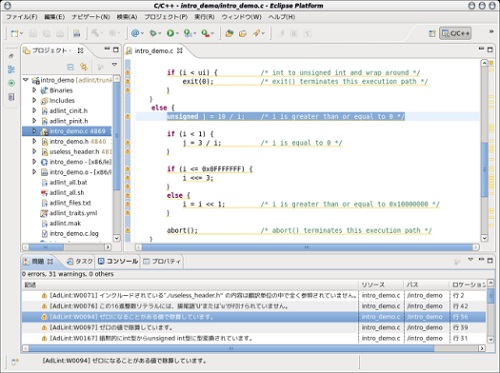

程式碼分析工具 AdLint 公開

◎本文原載 Linux Pilot，原文章連結按此。
企業要全面採用開源技術，其中必須經過的難關，便是要說服管理層有關安全性的問題。有人認為全面開放程式碼的產品沒有閉源產品般安全，原因是經過太多開發人員的修正，當中可能影響程式碼的質素甚至會造成漏洞，這次介紹的 AdLint 便是有效的解決方案。

開源產品因為程式碼對外公開，已經經過無數次的審查，安全性比較高是必然的。問題是採用開源技術的企業，卻不一定有能力親自去對程式碼再檢查一次，這時 AdLint 便能夠幫忙。AdLint 免費的程式碼靜態分析工具，本身亦是開源的程式，它可以對程式碼進行品質測定，目前可分析根據 ANSI C89、ISO C90 及部分 ISO C99 規格編寫的 C 語言程式碼，並輸出警告訊息，其 1.0 正式版本已於 2012 年 2 月 29 日公開。
以往要發現軟體產品的潛在問題，必須由開發者親自檢視程式碼，AdLint 可將此等功能自動化，從不同視點進行調査、總結出所謂的軟體品質測量 (Software Quality Metrics)。軟體品質測量是計算軟體質量的一套量度標準，例如要測量軟體的是否可靠，便可以利用平均故障間隔 (MTBF) 表示軟體的正常運作時間和發生問題時間的比例。開發者可利用 AdLint 在一定時間內建立的數據，從而觀測軟體品質測量數值的變化。
AdLint 由日本 Ogis 總研的開發者開發，並可配合同公司另一套開源程式碼品質評估工具 Adqua 使用，將程式碼品質評估過程可視化。AdLint 擁有與程碼編譯工具式相同的工作界面，可以與 Eclipse 等跨平台工具一起使用，直接跳至程式碼中有問題的部分。AdLint 現時可輸出多達 597 種警告訊息，可測定多達 15 種軟體品質測量，並可在 Windows XP、Windows 7 及各種 Linux 版本上運作，條件是必須安裝 Ruby 1.9.3-p0 或以後的版本、及 GNU Make 3以後的編譯環境。AdLint 採用 GNU GPL version 3 授權，可在 Sourceforge 網站下載。